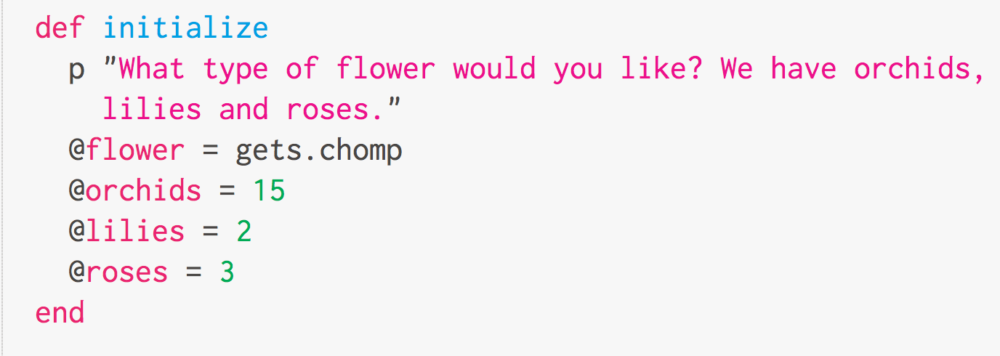
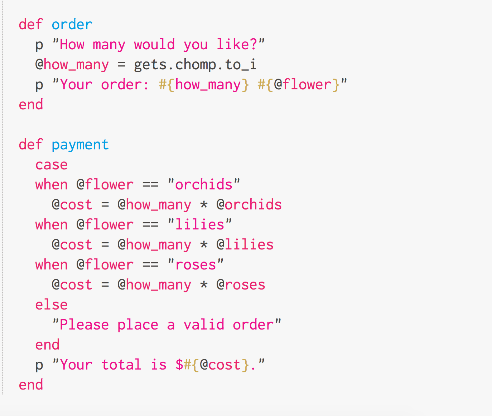
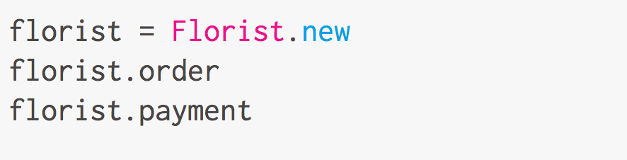

Your local florist
my retirement business
April 18, 2015

I love floral shops!
The retirement fantasy
Do you ever think about what you might do in your retirement? I certainly dream about retiring next to the beach in Hawaii, having brunch on a gorgeous porch with ocean view, taking naps or reading books in a hammock and enjoying beautiful walks along the beach every day.
Then there's the more realistic retirement plan - wouldn't I still like to have a job, something low-key, but productive and fun, so I don't get bored?
I recently discovered that I really enjoy flowers and noticed that Salt Lake City doesn't have very many floral shops. I often run to the grocery store to buy flowers and it's not nearly as fun as visiting a proper florist, the way I used to when I lived in Japan. So I got the idea of retiring as a florist.
My assistant, the class Florist
This week we learned about the ruby object, Classes, which allows you to mimic real-world situations. I sort of see the class being my assistant who will do a bunch of little tasks for me so I don't have to. Let's see how we could write a program for a florist, using a ruby class.
Naming a class
Naming a class is straight forward. Simply define it using "class" and give it a name, usually capitalized first letter.
class Florist
Initialize
The next thing you would do is to throw in an initialize method to the class. This is the code that runs at the very beginning, all the time.

In this case, my Florist class will ask you what type of flowers you would like. It will take an input with the gets.chomp method, which is assigned to a @flower variable. I am also defining the price of the flowers.
Instance Variables
Notice the @ signs in front of the variable names?
This allows these variables to be accessed from anywhere within the class, and will turn a normal variable into something called an instance variable.
More Methods!
After you've defined an initiazlie method, you can create as many methods within the class as you'd like. Methods are like tasks. In this case, I will have the Florist class ask the customer how many flowers they want, and say how much each will cost.

Let's run it!
In order for me to run the code, I need to do a few things.

- I need to create a new instance of the Florist class with Florist.new
- I will assign the instance to a variable called florist
- I will then call each method order and payment of the Florist method
Running this in terminal, it looks like this. :)

Conclusion
Now I have this amazing assistant, the Florist class, which will take orders for me and tell my customer how much they need to pay! Okay, the software needs to be a lot more sophisticaed and obviously needs work, but you get the idea about how classes can allow you to run multiple methods within it. It's pretty cool, you should try it!